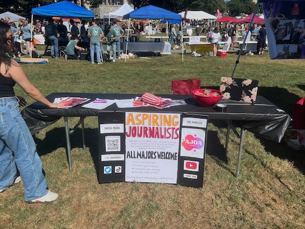
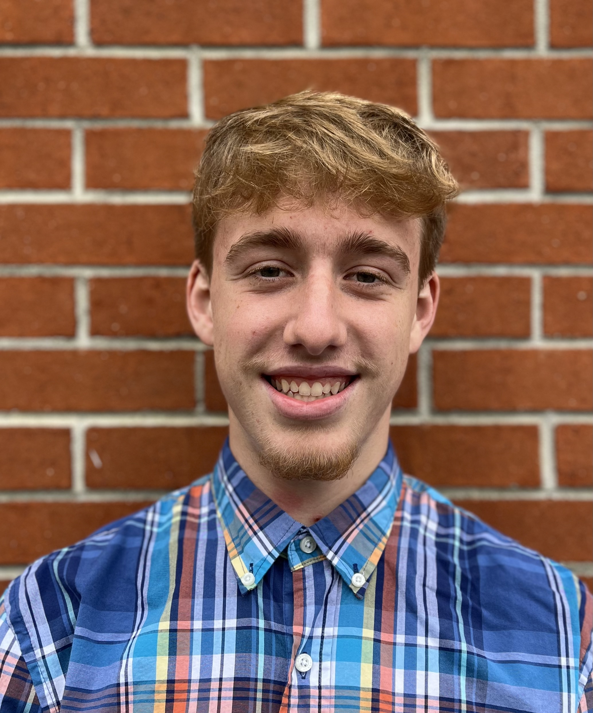

Mission Statement
We are a student run organization that supports journalism in all its forms and wants to help students gain experience, build their resume, and network.
History of the Club
Taylor Kelso and Naisha Dunnville, two undergraduates, founded Aspiring Journalists in 2018. They wanted to create a space where African American student journalists could encourage one another by offering information services like internship and scholarship opportunities, writing workshops, networking panels, and more to jump-start their careers as future journalists. In 2019, the organization started to grow, and everyone has been invited to contribute their own original creative journalism, including student content, like poetry, photography, short stories, and conversations through podcast performances. The organization now focuses on connecting with more student journalists on social media by giving them the resources they need to get ready for a career in journalism.
What's Happening in the Club
This semester, Aspiring Journalists has participated in Gobblerfest, the Multimedia Career Fair, and co-sponsored the Daniel Pearl Music Day concert with Hillel. We have also collaborated with the Society of Professional Journalists to host a resume workshop and a zoom with three guest speakers from the CBS News Political Unit.
The organization has gained many new members this semester as well, many who have contributed spectacular work! Evan Hull has contributed an interview with Nathan Dragon about his event Blue Arrangements. He has also written a handful of news stories ranging from Hokie Buzzfest to a press release about the club. Evan also talked with Stefan Duma about his Concussion Perspective Course. Diego Canales is another one of our new members and he has written a couple album reviews. He listened to Drake, Earl Sweatshirt, and the Alchemist's new albums and brokedown each one to express his opinions. Conor Ross has written two video game reviews, one being Spider-Man 2 and the other, Silent Hill. He not only purchased each game but spent hours playing in order to state his opinons on each experience. Benjamin Gozzi curated a wonderful interview with professor Buddy Howell.
What's Next For the Club
Evan Hull, a current member of the club who has now been passed the presidency, has come up with a great new direction for the club to go in. Next semester we will be implementing Aspiring Journalists Profiles. Each "aspring" journalist will get their own profile with an image and a few facts about themself. We asked each of them a couple of questions regarding major, their work in the club so far, and their future goals. These profiles will be a place for each journalist to have a collection of their works done while in the club. That way visitors of the website can put a face to the name as well as see all their work in one place.
Another idea that we will be starting next semester is having professors read their rate my professor ratings. It's inspiried from the Celebrity Mean Tweets segment on SNL. Kyndall, another new member had the idea to reach out to Comm and Journalism professors to film thier reactions. We will be reaching out to professors and begining this series in the Spring!
Our podcast will also be taking off in the spring! We hope to get more participation and get multiple episdoes out next semester. They willl range in topics and hopefully include guest speakers too.